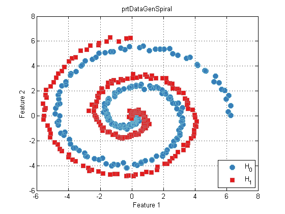

Data generation in the Pattern Recognition Toolbox
The Pattern Recognition Toolbox provides a set of data generation functions for illustrating typical data sets in pattern recogntion. Many of these data sets are two dimensional, and are used extensively in the documentation and help entries, primarily to aid in visualization. For example:
ds = prtDataGenSpiral; % Load a two dimensional data set, with 2 classes, % both drawn from a spiral distribution plot(ds)
The above example loads a data set and plots it. Several data generation functions exist for both classification and regression problems, with a varying number of features and classes. For a list of these functions, please refer to data generation functions